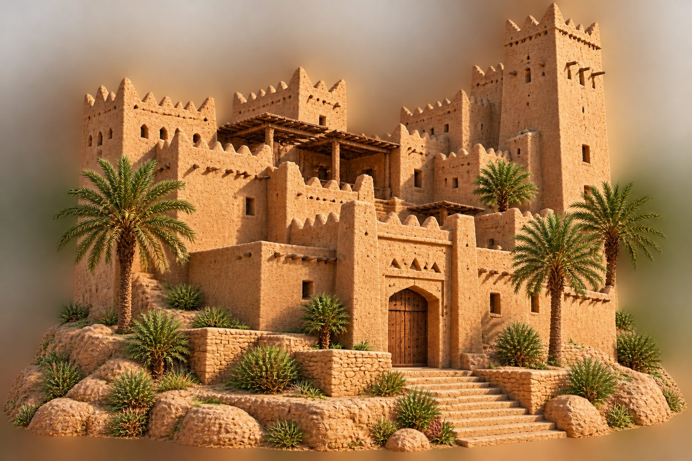
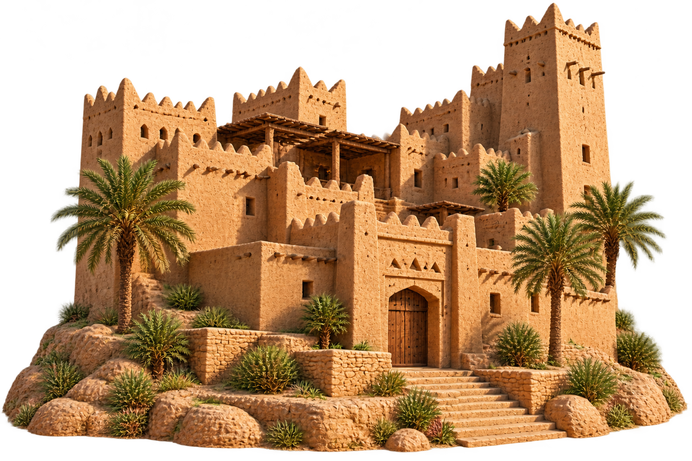

من أرض التاريخ
ألفاو
من إرث الماضي، نصنع صلة بالمستقبل

منصة سعودية تستلهم اسمها من حضارة عريقة، وتربط شغف التاريخ بروح التقنية الحديثة.
الفصل الأول — أصل الحكاية
لماذا اخترنا اسم «ألفاو»؟
سُمّيت منصتنا «ألفاو» نسبةً إلى قرية الفاو الأثرية، إحدى أهم المواقع التاريخية في الجزيرة العربية.
كانت الفاو عاصمة مملكة كندة الأولى، ومحطة تجارية كبرى على طرق القوافل، وملتقى للتجار والمقتنين والقطع النادرة.
تسمية تعكس موقع القرية عند فوهة وادي الدواسر.
الفصل الثاني — ارتباطنا بالجامعة
من جامعة الملك سعود بدأت الحكاية
يرتبط اسم الفاو ارتباطًا خاصًا بجامعة الملك سعود؛ فقد أسهم فريق بحثي من الجامعة بقيادة الدكتور عبدالرحمن الأنصاري في الكشف عن آثار الفاو وبدء أعمال التنقيب عام 1972م.
أسهمت هذه الجهود في إظهار كنز تاريخي مهم وتسليط الضوء على التراث الحضاري للمملكة.
اخترنا «ألفاو» تقديرًا لجهود جامعة الملك سعود في خدمة التراث الوطني، ولأن مشروعنا نابع من الجامعة نفسها.
الفصل الثالث — الماضي والمستقبل
من ملتقى القوافل إلى ملتقى رقمي
مثلما جمعت الفاو قديمًا التجار والمقتنين عبر طرق القوافل، تجمع منصتنا اليوم المهتمين بالمقتنيات التاريخية في بيئة رقمية حديثة.
الفاو قديمًا
سوق وقوافل وتبادل تجاري، وحضارات تلتقي في مكان واحد.
ألفاو اليوم
منصة رقمية حديثة تجمع هواة التاريخ والمقتنيات وتخدم مجتمع الجامعة والمملكة.
تغيّر الزمن، وبقيت فكرة اللقاء.
الفصل الرابع — رؤيتنا
لماذا أنشأنا ألفاو؟
لأننا نؤمن بأن التراث يستحق مساحة رقمية متخصصة، جاءت فكرة ألفاو لتسهيل اكتشاف القطع التاريخية، ومعرفة معلوماتها وحالة توثيقها، والمشاركة في المزادات بصورة واضحة.
اكتشف التراث
تعرّف على المقتنيات التاريخية وقصصها ومعلوماتها.
تعرّف على حالة التوثيق
اطّلع على حالة التحقق الصادرة عن هيئة التراث والوثائق المتاحة.
شارك بوضوح وثقة
تابع المزادات وتعرّف على تقييمات البائعين وسجل العروض.
ألفاو
اسمٌ من التاريخ ورؤيةٌ للمستقبل
من إرث قرية الفاو وجهود جامعة الملك سعود، استلهمنا منصة تجمع المعرفة والأصالة والتقنية الحديثة.
ابدأ رحلتك مع ألفاو